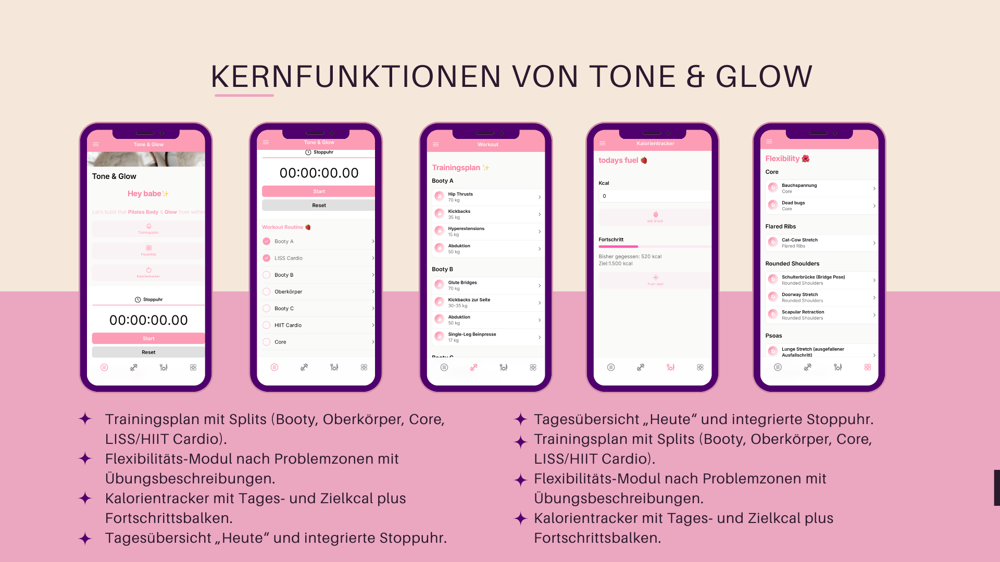
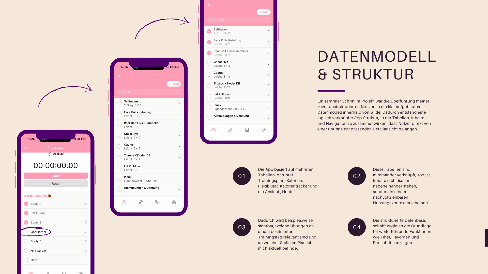
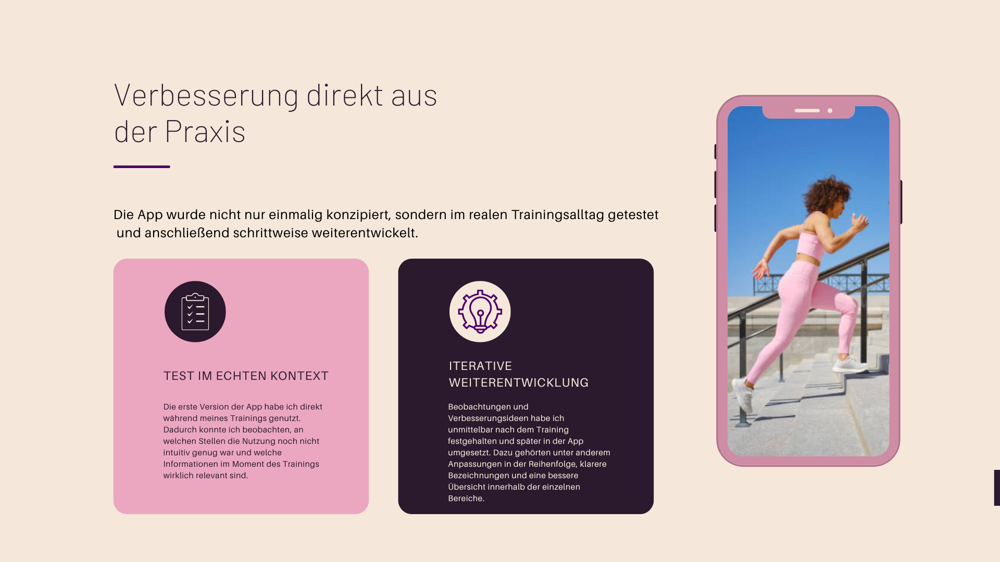
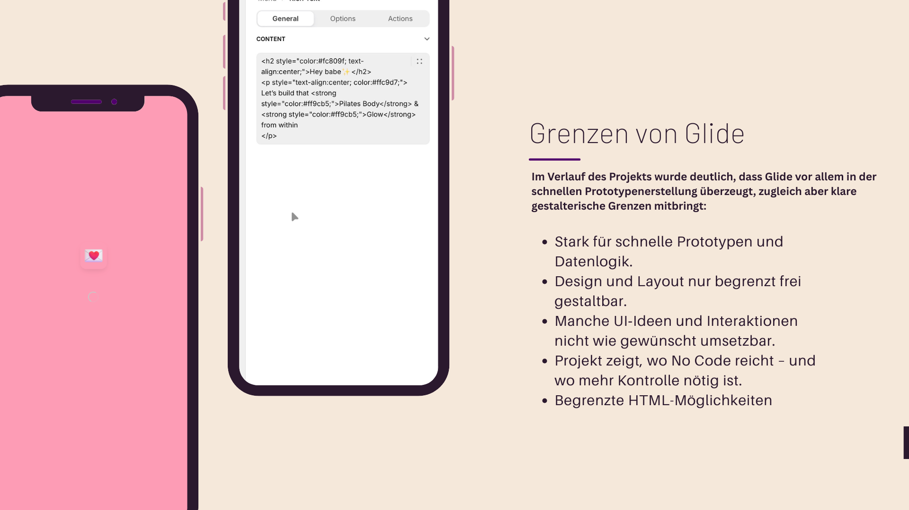
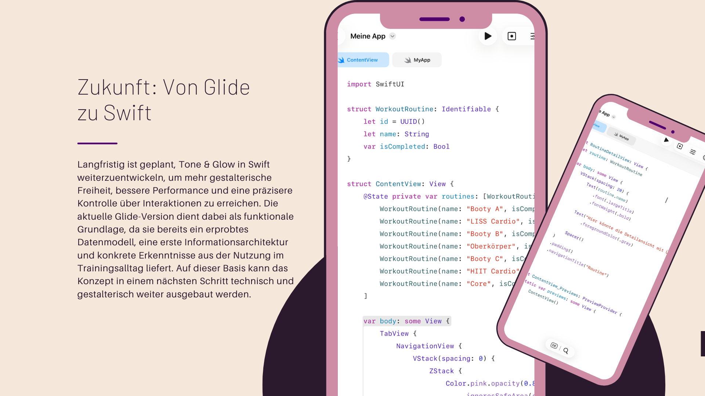

The problem
The original situation was shaped by media breaks during training. Important information was available, but not in one coherent context, which made routines harder to follow and less efficient in the moment.
Case Study
A fitness app prototype designed to reduce media breaks in everyday training by combining workout plans, mobility exercises, calorie tracking and a “Today” overview in one intuitive flow.
The project started from a practical problem in my own workout routine: training information, exercise notes and calorie tracking were spread across different places, which created unnecessary interruptions and made the experience less natural in use.
The original situation was shaped by media breaks during training. Important information was available, but not in one coherent context, which made routines harder to follow and less efficient in the moment.
The aim was to bring workout structure, flexibility content, calorie tracking and a navigation logic that feels natural in daily use into one app experience.

Glide enabled a fast start without custom code and shifted the focus toward structure, data logic and user experience instead of early implementation complexity.
It allowed quick iteration and made the first app version directly usable during real workouts.
A table-based backend was well suited for training plans, flexibility content and tracking features.
This setup supported early thinking around hierarchy, clarity and actual use context.
The app combined several functions that would otherwise be split across notes, trackers and separate planning tools.




One of the central steps in the project was turning previously unstructured notes into a clear and connected data model inside Glide.
The app was built on multiple linked tables, including training plan, calories, flexibility content, calorie tracker data and the “Today” view. Rather than existing side by side, these parts were connected so information would appear in a meaningful usage context.
This structure made it easier to move from a routine to the relevant detail view and understand what mattered on a specific training day. It also created the basis for future features such as filters, favorites and progress indicators.
The first version of the app was tested directly during real training sessions, which made it possible to evaluate relevance, clarity and timing in a practical situation.
Observations and improvement ideas were documented immediately after training and then implemented in the app. This included changes in information order, clearer labels and better overview structures in key sections.
The app was therefore not only conceptually planned once, but gradually improved through repeated use in a real setting.
The project also made visible where no-code tools are strong and where they become restrictive.
Glide was strong for quick prototyping, structured data logic and fast testing of product ideas.
Design freedom, layout control and some interaction ideas could not be implemented as precisely as intended.
The project highlighted where no-code is enough for learning and validation, and where deeper technical control becomes necessary.
Tone & Glow showed me that everyday problems can become meaningful starting points for digital solutions, and that user experience depends not only on interface design, but also on structure, navigation logic and real-life use.
The project helped me understand no-code as a practical way to test, reflect on and evolve ideas quickly. At the same time, it became a strong case study for how I think about usability, information architecture and iterative product improvement.